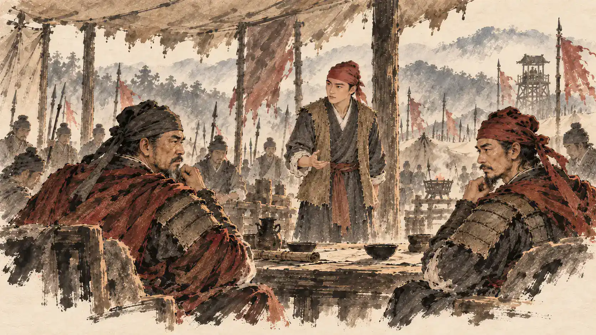

本页为制作评审，播放与查看不会改变游戏存档。所有对白为戏剧复原；历史完成标题只在片尾出现。前两任务、开场和旧版源文件均保留。
选择结果影卷
marriage-rest
7幅不同原画 · 无重复裁切镜头
逐镜顺序
马氏｜营里的衣物，破了便补。人心，也要留意。
旁白｜郭子兴以所抚马氏妻重八。仪节为场景复原。
马氏｜同在一城，不该先把路堵死。
朱重八｜我去劝元帅，营中也得照看。
郭子兴｜诸帅相争，我不愿再听。
朱重八｜城外有兵，城里更要相通。
马氏｜先歇一会儿，水还温着。
marriage-watch
7幅不同原画 · 无重复裁切镜头
逐镜顺序
马氏｜营里的衣物，破了便补。人心，也要留意。
旁白｜郭子兴以所抚马氏妻重八。仪节为场景复原。
马氏｜同在一城，不该先把路堵死。
朱重八｜我去劝元帅，营中也得照看。
郭子兴｜诸帅相争，我不愿再听。
朱重八｜城外有兵，城里更要相通。
朱重八｜换哨如何交接，逐处问清。
rescue-direct
13幅不同原画 · 无重复裁切镜头
逐镜顺序
军士｜郭元帅被拘了！城中正在传。
朱重八｜先回郭家，把实情问清。
朱重八｜我来救人，请两位公子同去。
旁白｜郭家二子随重八前往求援。
朱重八｜请彭帅援手，救郭帅出困。
彭大｜带人前去，不能坐视。
军士｜人关在这间屋里。退路在巷后。
朱重八｜守住巷口，不许乱冲。
军士｜瓦揭开了，小心下去。
朱重八｜莫动，先把拘械打开。
朱重八｜扶住他，慢些出去。
军士｜前后照应，沿原路归家。
朱重八｜伤也要记，不能只报救成了。
rescue-escort
13幅不同原画 · 无重复裁切镜头
逐镜顺序
军士｜郭元帅被拘了！城中正在传。
朱重八｜先回郭家，把实情问清。
朱重八｜我来救人，请两位公子同去。
旁白｜郭家二子随重八前往求援。
朱重八｜请彭帅援手，救郭帅出困。
彭大｜带人前去，不能坐视。
朱重八｜布和担架先备好，接出来就能护送。
军士｜人关在这间屋里。退路在巷后。
朱重八｜守住巷口，不许乱冲。
军士｜瓦揭开了，小心下去。
朱重八｜莫动，先把拘械打开。
朱重八｜扶住他，慢些出去。
军士｜前后照应，沿原路归家。
siege1-full
6幅不同原画 · 无重复裁切镜头
逐镜顺序
军士｜城外围了，今夜起轮守。
朱重八｜守、修、歇，各有人管。
军士｜木料用在缺口，不可虚填。
朱重八｜按数给粮，换下的人先吃。
军士｜夜还长，轮到谁，便叫谁。
旁白｜冬去春来，城仍在守。
siege1-lean
6幅不同原画 · 无重复裁切镜头
逐镜顺序
军士｜城外围了，今夜起轮守。
朱重八｜守、修、歇，各有人管。
军士｜木料用在缺口，不可虚填。
马氏｜薄一点，也要分得匀。
军士｜夜还长，轮到谁，便叫谁。
旁白｜冬去春来，城仍在守。
siege2-full
6幅不同原画 · 无重复裁切镜头
逐镜顺序
旁白｜冬去春来，城仍在守。
军士｜粮仓见底了。新拨的粮，已另记。
朱重八｜守、修、歇，各有人管。
朱重八｜按数给粮，换下的人先吃。
军士｜木料用在缺口，不可虚填。
马氏｜水在这边，回来先缓口气。
siege2-lean
6幅不同原画 · 无重复裁切镜头
逐镜顺序
旁白｜冬去春来，城仍在守。
军士｜粮仓见底了。新拨的粮，已另记。
马氏｜薄一点，也要分得匀。
军士｜夜还长，轮到谁，便叫谁。
军士｜木料用在缺口，不可虚填。
马氏｜水在这边，回来先缓口气。
siege3-rotate
8幅不同原画 · 无重复裁切镜头
逐镜顺序
军士｜夜还长，轮到谁，便叫谁。
朱重八｜替守的人上来，疲兵慢慢退。
朱重八｜守、修、歇，各有人管。
军士｜撑住木栅，这里还不能松。
马氏｜水在这边，回来先缓口气。
军士｜城外的营帐，撤了。
朱重八｜先查城门外，再放人通行。
马氏｜门开了，仓里却还空。
siege3-press
8幅不同原画 · 无重复裁切镜头
逐镜顺序
军士｜夜还长，轮到谁，便叫谁。
军士｜撑住木栅，这里还不能松。
军士｜木料用在缺口，不可虚填。
马氏｜水在这边，回来先缓口气。
朱重八｜守、修、歇，各有人管。
军士｜城外的营帐，撤了。
朱重八｜先查城门外，再放人通行。
马氏｜门开了，仓里却还空。
salt-fast
7幅不同原画 · 无重复裁切镜头
逐镜顺序
朱重八｜盐和行粮，领多少，记多少。
军士｜绳都结牢了，粮各人分背。
朱重八｜趁天光赶路，别丢下后面的人。
粮商｜盐过秤，米过斗。
朱重八｜斗量平了，再装袋。
军士｜米背回来了，路粮也耗了。
马氏｜剩下的全入仓，一斗也记清。
salt-steady
7幅不同原画 · 无重复裁切镜头
逐镜顺序
朱重八｜盐和行粮，领多少，记多少。
军士｜绳都结牢了，粮各人分背。
朱重八｜肩磨破前歇一程，货不能散。
粮商｜盐过秤，米过斗。
朱重八｜斗量平了，再装袋。
军士｜米背回来了，路粮也耗了。
马氏｜剩下的全入仓，一斗也记清。
recruit-repair
7幅不同原画 · 无重复裁切镜头
逐镜顺序
乡人｜是重八回来了。
朱重八｜愿来的逐个登记，家什也要点。
徐达｜我来从你。
朱重八｜姓名、来处，一人一人核。
朱重八｜先修急用的，不齐的照实记。
军士｜今日用过的粮，已经入册。
旁白｜募兵归来，郭子兴以重八为镇抚。
recruit-train
7幅不同原画 · 无重复裁切镜头
逐镜顺序
乡人｜是重八回来了。
朱重八｜愿来的逐个登记，家什也要点。
徐达｜我来从你。
朱重八｜姓名、来处，一人一人核。
徐达｜听号再换，前后别散。
军士｜今日用过的粮，已经入册。
旁白｜募兵归来，郭子兴以重八为镇抚。
departure-full
9幅不同原画 · 无重复裁切镜头
逐镜顺序
朱重八｜人和册一并交，照数核验。
接兵将领｜粮械也清了，记入接收簿。
朱重八｜各安其伍，往后仍守军令。
朱重八｜我愿领少数人南去。
徐达｜同行的人，已经等候。
朱重八｜多带一日粮，便多分一份担子。
马氏｜路上莫逞强，平安走好眼前这段。
旁白｜七百人留在军中，小队出城。
朱重八｜向南去。先走稳这一步。
departure-light
9幅不同原画 · 无重复裁切镜头
逐镜顺序
朱重八｜人和册一并交，照数核验。
接兵将领｜粮械也清了，记入接收簿。
朱重八｜各安其伍，往后仍守军令。
朱重八｜我愿领少数人南去。
徐达｜同行的人，已经等候。
朱重八｜这二十五份留下，我们轻装走。
马氏｜路上莫逞强，平安走好眼前这段。
旁白｜七百人留在军中，小队出城。
朱重八｜向南去。先走稳这一步。
独立原画
成家与嫌隙
c-home-courtyard
马氏｜营里的衣物，破了便补。人心，也要留意。c-marriage-witness
旁白｜郭子兴以所抚马氏妻重八。仪节为场景复原。c-lamp-talk
马氏｜同在一城，不该先把路堵死。c-mending
朱重八｜我去劝元帅，营中也得照看。
c-council
郭子兴｜诸帅相争，我不愿再听。c-advice
朱重八｜城外有兵，城里更要相通。c-watch
朱重八｜换哨如何交接，逐处问清。c-rest
马氏｜先歇一会儿，水还温着。闻难救郭
围城数月
以盐易米
f-salt
朱重八｜盐和行粮，领多少，记多少。f-load
军士｜绳都结牢了，粮各人分背。f-road-fast
朱重八｜趁天光赶路，别丢下后面的人。f-road-rest
朱重八｜肩磨破前歇一程，货不能散。f-market
粮商｜盐过秤，米过斗。f-measure
朱重八｜斗量平了，再装袋。f-return
军士｜米背回来了，路粮也耗了。f-handover
马氏｜剩下的全入仓，一斗也记清。归乡募兵
交兵离濠
开场与前两任务
入濠投军 · 已认可的90秒开场
帐下九夫 · 整备
帐下九夫 · 操练
帐下九夫 · 踏看
接应归营 · 正面掩护
接应归营 · 侧路
接应归营 · 交替掩护
接应归营 · 有人负伤